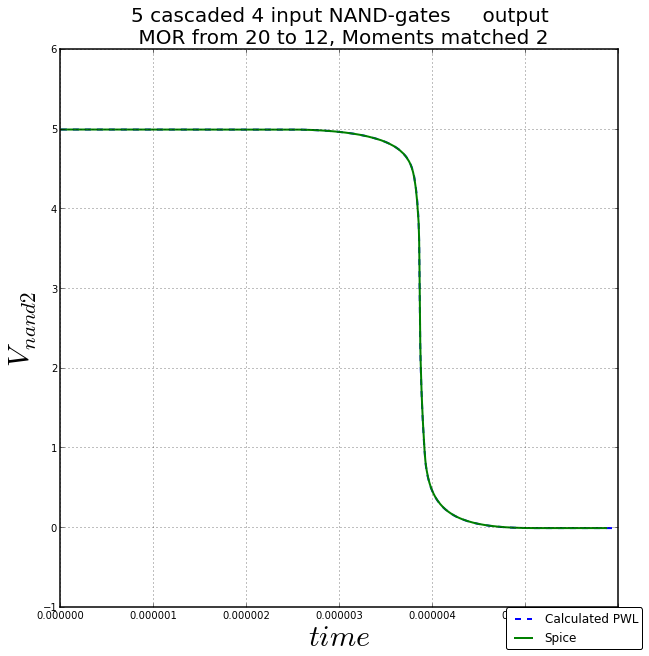
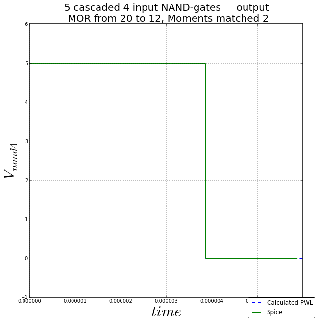
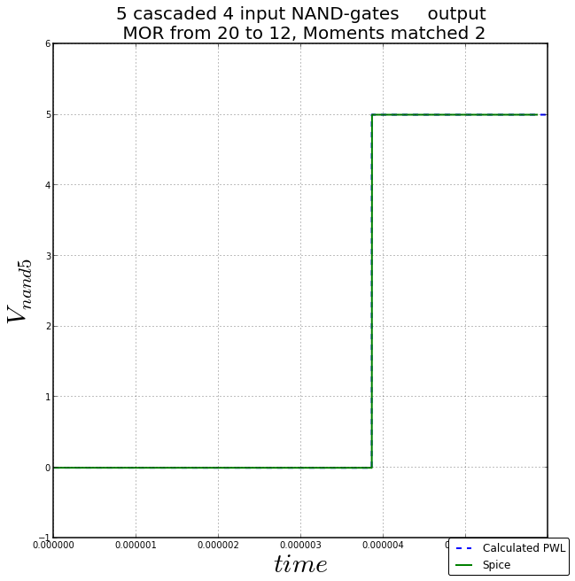

Cascade of 5 4-input NAND gates¶
This system has a 20 dimensional state space and is a chain of NAND gates.
The state space equations for this system are in the config file Resources
For implementing current equations, we used level1 MOS equations. The net list of the circuit is provide in Resources section
TPWL-MOR Integration¶
The TPWL model for this system was not checked, direct implementation of TPWL-MOR was checked. The order was successfully reduced from 20 to 12 with 2 moments matched.
The following are the voltages at various nodes of the chain.



